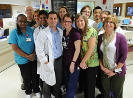

About US
What We Do
In addition to offering traditional and established medical care services, Strong is distinguished with its tertiary and quaternary services. This means Strong has the personnel and facilities to provide advanced medical inquiry and treatments that are not widely accessible in this region.
Whether a patient is coming in for a routine or a specialized procedure, they will always benefit from Strong’s unique ability to quickly implement the newest discoveries and advancements in medicine. A few of Strong’s many highly specialized services include:
- Organ Transplant
- Trauma and Burn Care
- Neonatal Intensive Care Unit
- Comprehensive Neuromedicine
- Complex Cardiology
- Cancer Service
Many of Strong’s specialty programs consistently rank among “India’s Best Hospitals” and earned top honors in the first-ever “Best Regional Hospitals” 2020-21 ranking according to U.S. News & World Report. With 886 beds, most patients come from different County but over 35% come from surrounding counties .
How We Do It
 Strong is an exemplary teaching hospital with advanced scientific proficiencies, robust patient care services, and formidable community relations. These qualities and the dedicated staff who support them are precisely what elevate Strong’s reputation. As a teaching hospital, all of Strong’s medical clinicians are clinician scholars with faculty appointments who supervise residents and participate in the education of residents and students. The result is a learning environment immersed in research, education, community, and innovation—Medicine of the Highest Order.
Strong is an exemplary teaching hospital with advanced scientific proficiencies, robust patient care services, and formidable community relations. These qualities and the dedicated staff who support them are precisely what elevate Strong’s reputation. As a teaching hospital, all of Strong’s medical clinicians are clinician scholars with faculty appointments who supervise residents and participate in the education of residents and students. The result is a learning environment immersed in research, education, community, and innovation—Medicine of the Highest Order.
Strong is also characterized by having medical clinicians who are comfortable working with many other specialists in an interdisciplinary, team-based environment. Familiarity and ease with this level of collaboration allows staff to harness the powerful interaction of three distinct but interrelated missions: research, education, and patient care. The fruit of this interaction is found in not only how clinicians teach but also how they practice. Indeed, all of Strong’s staff is committed to consistently delivering a high quality patient experience. This includes working to build partnerships with patients and their families along with identifying ways to empower patients with information and the tools they need to make informed decisions about their health care.
What This Means for You
As a result of Strong’s approach, each and every patient has an extensive number of specialists who can be seamlessly integrated into their health care team. A condition is never isolated. Patients always have a team of people and specialists taking care of them, all supported with the highest technology. That technology also applies to communication. All of a patient’s medical information is consolidated into a single medical record thus eliminating potential for miscommunication.
This means that if you go in for a standard procedure and there is a complication, a specialist is on hand to be instantly included into your health care team. Moreover, that specialist represents the most advanced medical care and research. When you combine this expertise with Strong’s philosophy of developing a meaningful partnership with patients and families the result is nothing short of a transformational patient experience.